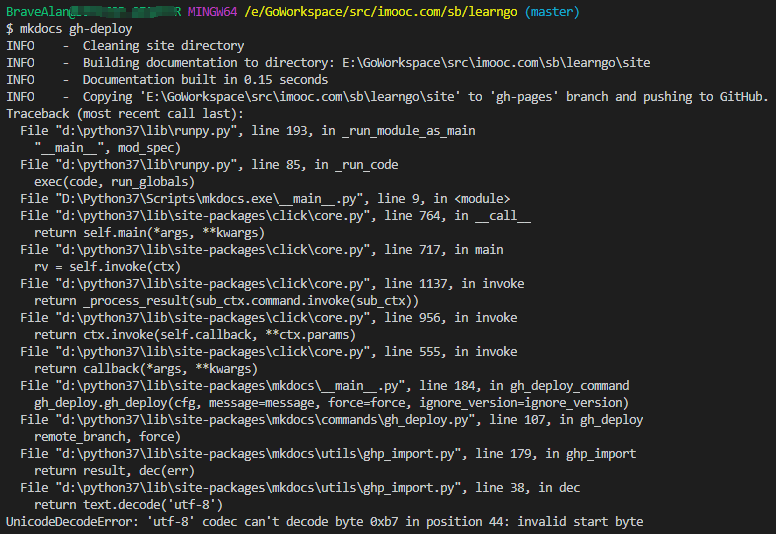

电子书制作流程
mkdocs常用于文档写作，官方文档（英文）传送门
1. 安装依赖
pip install mkdocs
常用命令如下：
mkdocs new [dir-name]- 创建一个新项目mkdocs serve- 启动热加载服务器，监测文档变更并在浏览器上实时预览mkdocs build- 在当前目录下生成site文件夹，将编写的文档转变成HTML文件mkdocs gh-pages- 将site文件夹里的内容push到gh-pages分支mkdocs -h- 命令帮助
2. 创建项目
使用mkdocs new [dir-name]创建dir-name文件夹，其结构如下所示：
mkdocs.yml # 配置文件
docs/
index.md # 主页
... # 其他页面
通常是为一个已经存在的git项目编写文档。因此一般的做法是将dir-name文件夹放置在项目的根目录下
3. 启动mkdocs的内置dev-server
MkDocs带有内置的开发服务器，可用于实时预览文档。在与mkdocs.yml配置文件位于同一目录下，运行mkdocs serve可启动Server，效果如下：

4. mkdocs.yml常用配置
mkdocs bug
- 在windows的vscode中切换Shell为bash，然后执行
mkdocs serve会报如下错误，换成windows自带的Shell则正常，我才应该是文件路径编码问题。 